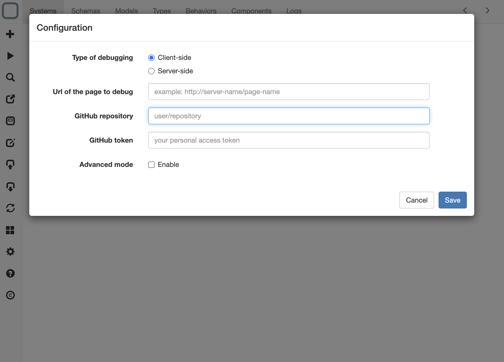
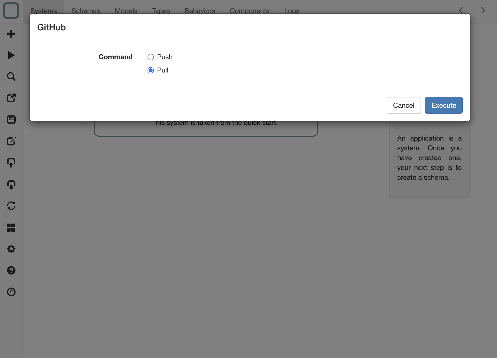
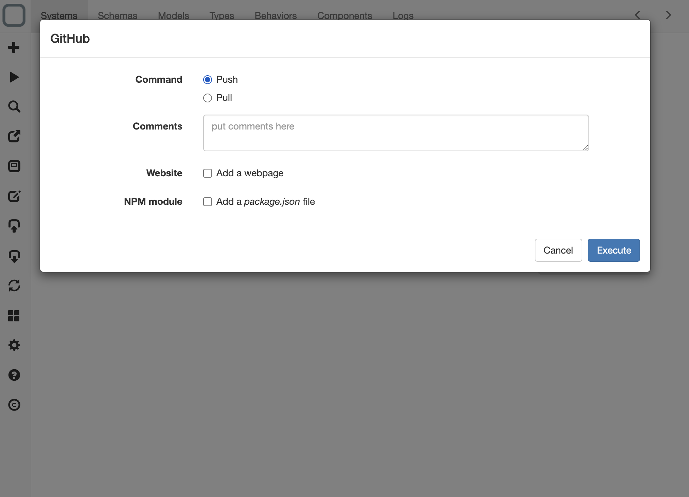

Sync your systems with GitHub
You can save your systems in a GitHub repository to share your systems with other users or with other System Designer apps.
Configure your GitHub repository
- go to GitHub,
- create a repository to store your systems,
- go to the Personal Access Tokens page,
- click on Generate new token button,
- in Token Description type 'System Designer',
- add repo scope,
- click on Generate token button and
- copy the generated key.
Configure System Designer
- open the configuration panel,
- in GitHub token paste your key,
- in GitHub repository set the name of your repository (example: myname/myrepo ) and
- click on Save button.

Get systems from GitHub
- open the GitHub panel,
- select Pull,
- click on Execute button and
- all the systems in your Github repository will be added into System Designer.

Send a system to GitHub
- open the GitHub panel,
- add a comment,
- click on Execute button and
- your current system will be pushed in your GitHub repository.

What are the options on a push command?
On a push command, you can: - create a HTML file that will refer to your system (for client-side use) or - create a package.json file (for creating a npm module).